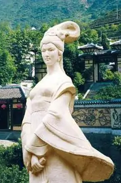

王昭君（约公元前54年—公元前19年），名嫱，字昭君（一说昭君非表字），乳名皓月，西汉南郡秭归（今湖北省宜昌市兴山县）人，与貂蝉、西施、杨玉环并称中国古代四大美女，是中国古代四大美女之一的“落雁”。晋朝时为避司马昭讳，又称明妃、王明君。成语中沉鱼落雁、画工弃市记载她的生平典故。 竟宁元年（前33年），南匈奴首领呼韩邪单于入京朝见，请求作为汉朝的女婿，汉元帝挑选了宫女王昭君赐之。昭君告别故土，登程北去。一路上黄沙滚滚、马嘶雁鸣，使她心绪难平，遂于马上弹奏《琵琶怨》。凄婉悦耳的琴声，美艳动人的女子，使南飞的大雁忘记了摆动翅膀，纷纷跌落于平沙之上，落雁便由此成为了王昭君的雅称。 据《西京杂记》记载，汉元帝因后宫女子众多，就叫画工画了像来，看图召见宠幸。宫人都贿赂画工，独王昭君不肯，所以她的像被画得最差，不得见汉元帝。后来属国南匈奴首领入朝朝贡并自请为婿，汉元帝就按图像选了宫女王昭君赐予他，临行前才发现昭君优雅大方、容貌最美，悔之不及，追究下来，就把毛延寿、陈敞等许多画工都杀了。历代文人多据此为文、吟诗作赋，如吴雯《明妃》：“不把黄金买画工，进身羞与自媒同”；王安石《明妃曲》：“归来却怪丹青手，入眼平生未曾有。意态由来画不成，当时枉杀毛延寿”；欧阳修《明妃曲再和王介甫》：“虽能杀画工，于事竟何益。。耳目所及尚如此，万里安能制夷狄”。 昭君墓，又称“青冢”，“青冢”一词，杜诗对其注解曰：北地草皆白，惟独昭君墓上草青，故名青冢。另有解释认为：塞外多白沙，昭君墓无草木，烟垓朦胧，冥蒙作青色，远见数十里外，故曰青冢。昭君墓址并无考古发掘，在内蒙古、山西、河南等地均有相关墓葬或衣冠冢。 |
 | |
| 返回 | ||